Zi Arch Studio — Architecture, Art and Research
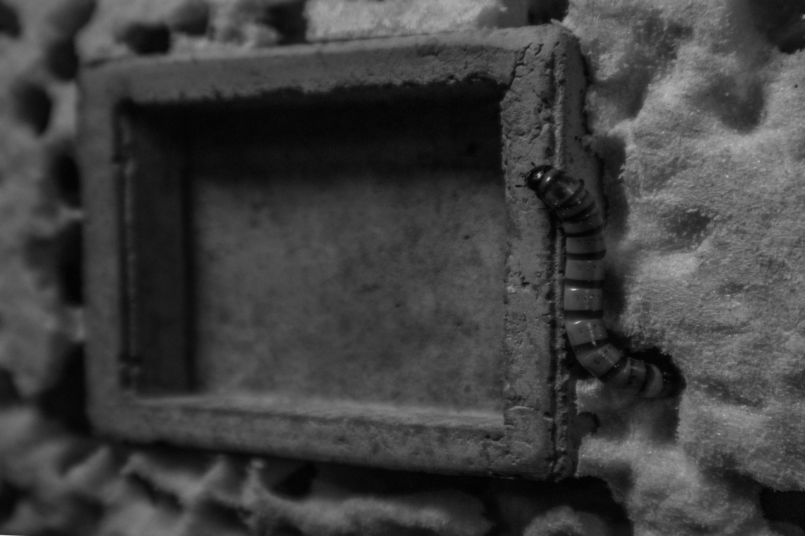
Projects /WormFinding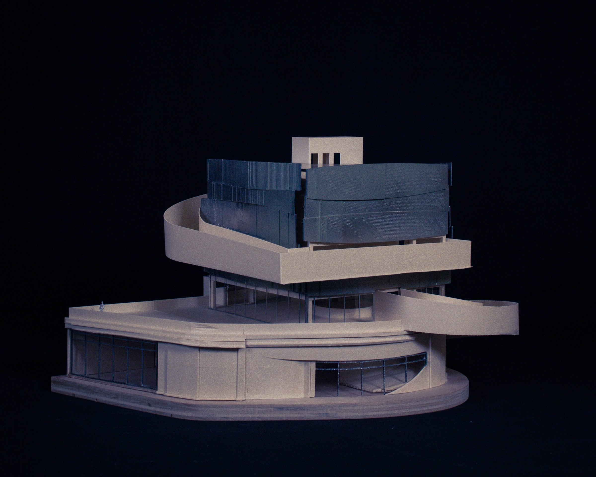
Projects /LA Olympic Museum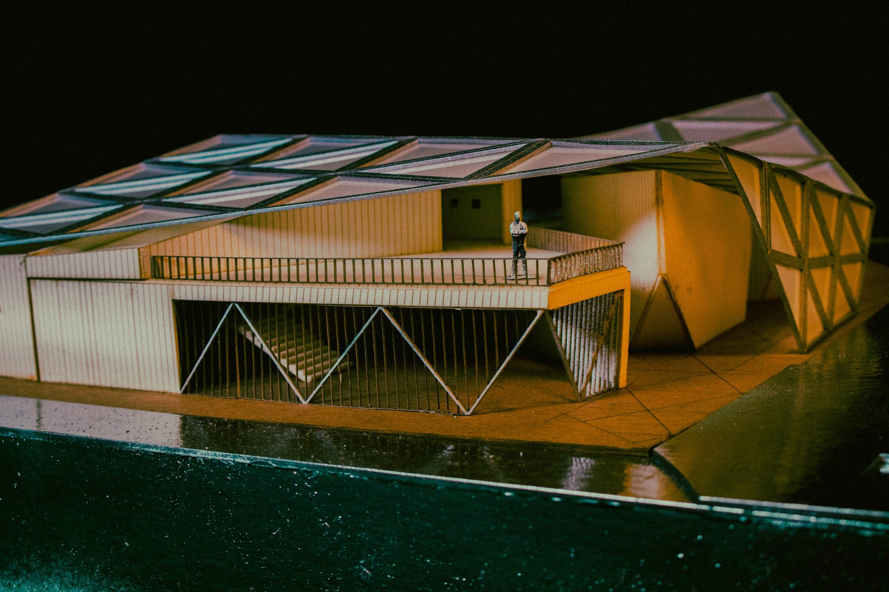
Projects /LA Train Station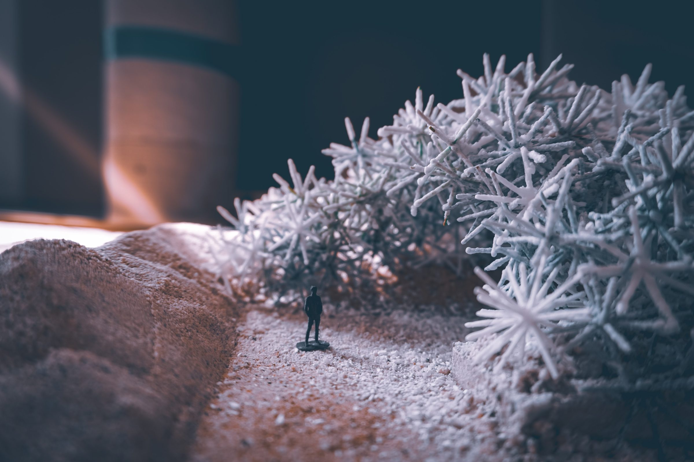
Projects /Saleria Projects /Shelter
Projects /Shelter
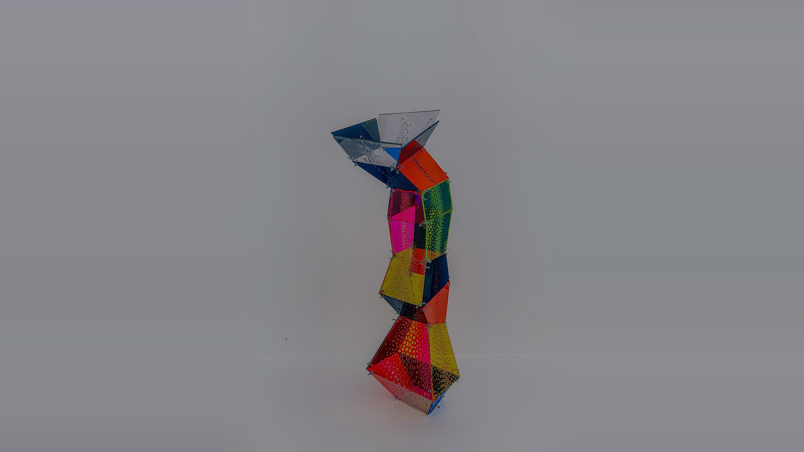
Projects /Performative Vessels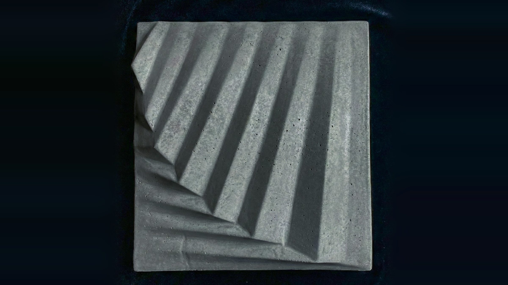
Projects /Endemic Architecture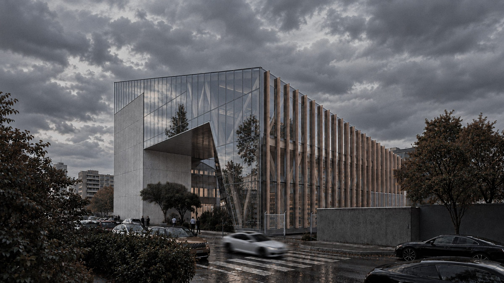
Projects /Porta Verde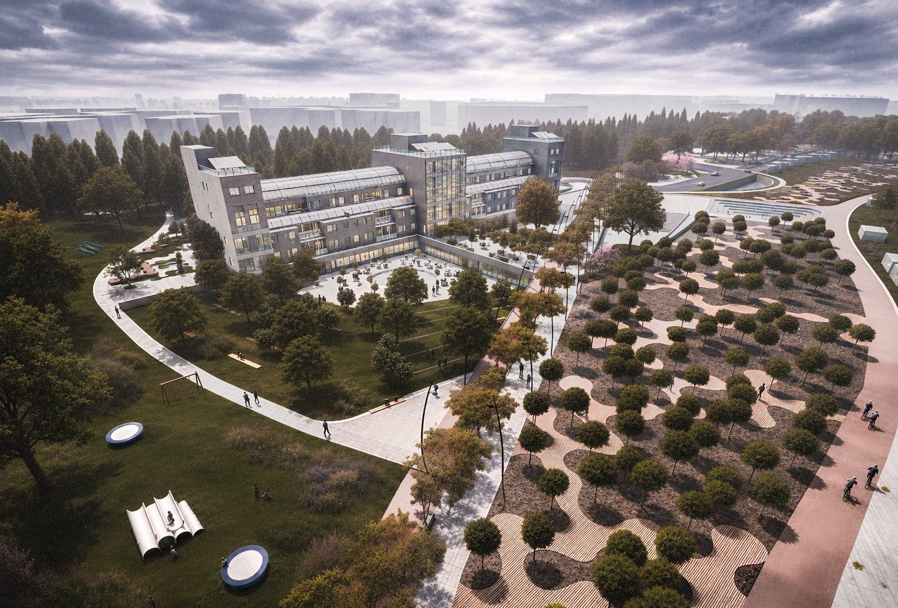
Projects /Harvesting the Future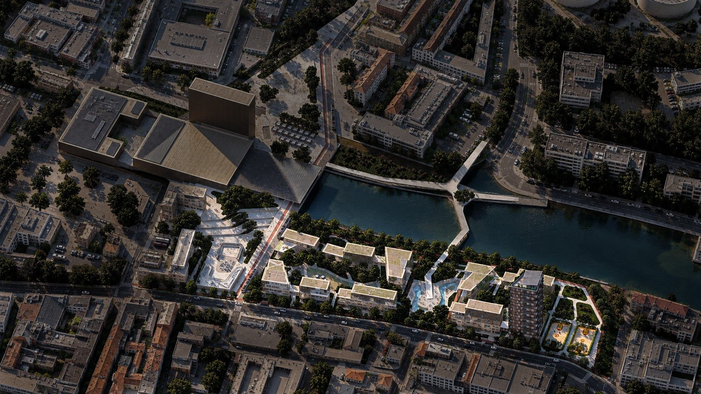
Projects /Sustainable Multidisciplinary Design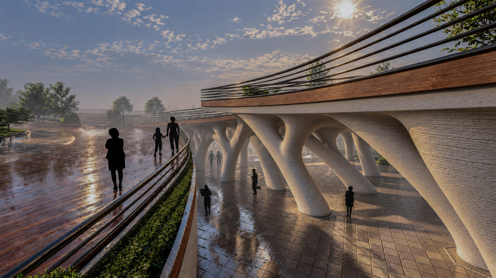
Projects /Topo Bridge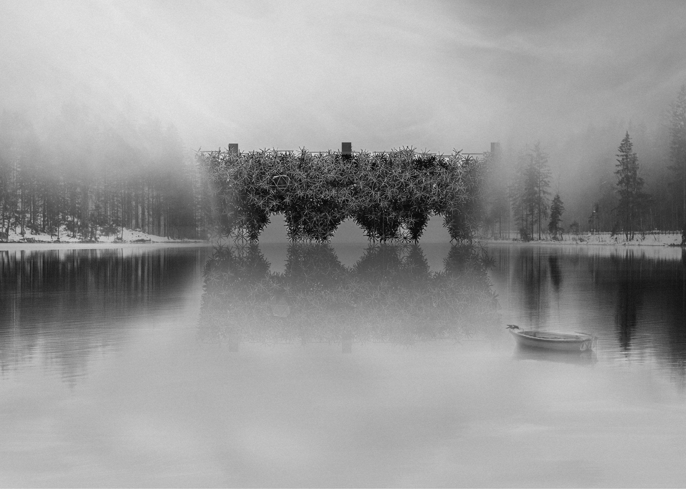
Projects /ESTA Projects /Digitalized Versatile Mold
Projects /Digitalized Versatile Mold
 Projects /Active Bending Gridshell
Projects /Active Bending Gridshell
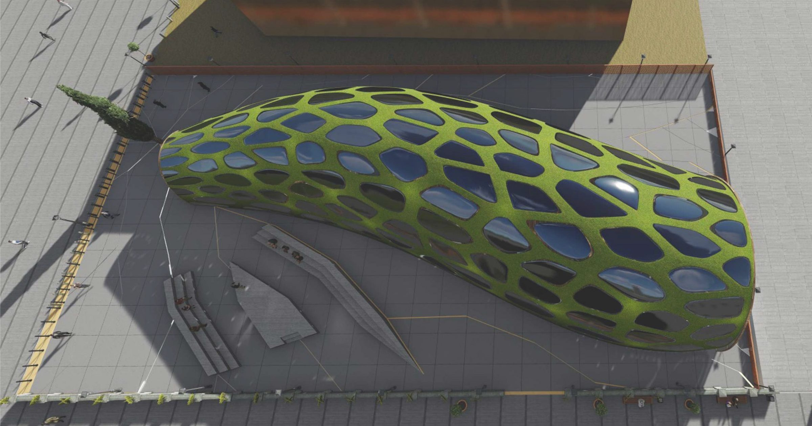
Projects /Iran Expo Pavilion